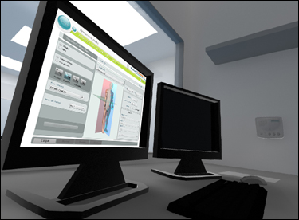

 |
|
Se precisa un sistema de almacén de los datos adquiridos en una base de archivos asociado a un software que permita elaborar los cálculos matemáticos precisos en la transformación de la frecuencia de resonancia en píxel.
Los equipos actuales disponen de múltiples unidades de disco duro y monitores asociados de manera que se puede controlar el estudio desde la sala de resonancia y al mismo tiempo revisar o manipular las imágenes adquiridas desde otra sala a distancia. |